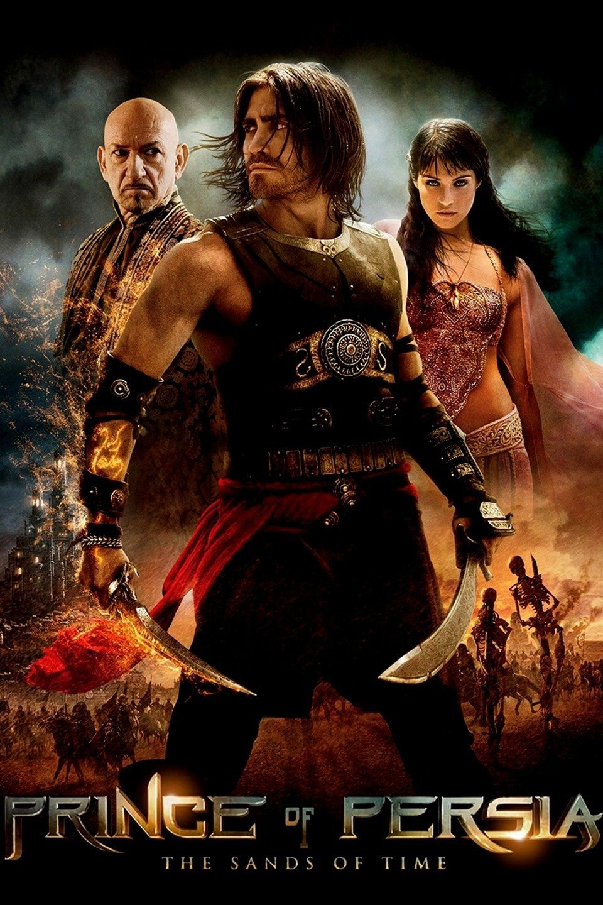
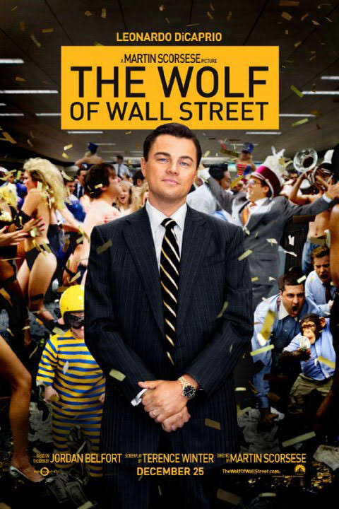

My Favourite Movies
#1.Prince of Persia: The Sands of Time |
#2.The Wolf of Wall Street |
#3.The Vampire Diaries |
|---|---|---|
|
Genre: Action, Adventure, Fantasy; Short Description: A young fugitive prince and princess must stop a villain who unknowingly threatens to destroy the world with a special dagger that enables the magic sand inside to reverse time.  |
Genre: Biography, Comedy, Crime; Short Description:Based on the true story of Jordan Belfort, from his rise to a wealthy stock-broker living the high life to his fall involving crime, corruption and the federal government.  |
Genre: Drama, Fantasy, Horror; Short Description:A young teen struggles to make a decision between two vampire brothers and their supernatural lives. Soon after she discovers the truth her whole world turns upside down. 
|